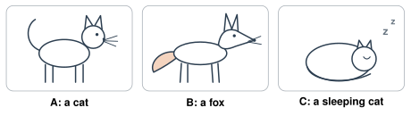
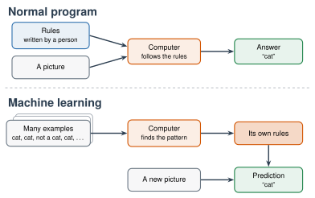
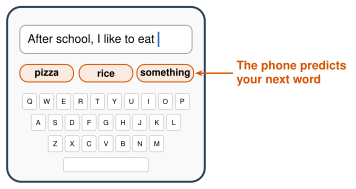
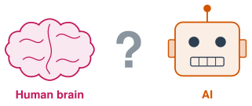

1.1 - What Is AI?
Your phone opens when it sees your face. A video app knows what you want to watch next. A chatbot writes a story in two seconds.
All of these use AI. But what is AI? How is it different from a normal computer program? And is it like a human brain?
Today you sort things into AI and not AI. You try to teach a computer what a cat is. Then you play a drawing game against an AI.
Today’s Plan (40 minutes)
- 🔥 Warm Up AI or not? 6 min
- 👥 Learn Together Rules or examples? 10 min
- 🛠️ Try It Quick, Draw! 14 min
- 🧠 The Big Question Is AI like a brain? 10 min
- 🤖 artificial intelligence (AI): a computer program that does things that usually need human thinking
- 💻 computer program: a list of steps that a computer follows
- 📏 rule: an exact instruction, like “If this happens, do that.”
- 🗂️ data: information, like pictures, words, or numbers
- 🧩 pattern: something that is the same in many examples
- 📚 machine learning: a computer finds patterns in many examples
- 🔮 prediction: a best guess about something you do not know yet
Printable lesson sheet - the sheet you write on today.
🔥 Warm Up
Look at these 10 things. Which ones use AI?
Press a choice on each card: AI, Not AI, or Not sure. Talk with a partner. You do not need to agree.
They all learn from examples, and they all make guesses.
The calculator and the alarm clock do not learn. They only follow rules that a person wrote.
👥 Learn Together
1.1.1 - What Does “AI” Mean?
AI means artificial intelligence.
| Word | Meaning | Example |
|---|---|---|
| Artificial | made by people | Artificial flowers are made of plastic or paper. |
| Intelligence | the ability to learn, understand, and solve problems | You use intelligence to learn a new language. |
So AI is a computer program that does things that usually need human thinking. AI can see faces, understand speech, translate languages, and write.
Most AI today does these things in a new way. It learns from examples. Let’s see why.
1.1.2 - Can You Write a Rule for “Cat”?
A normal computer program follows rules. A person writes every rule.
| Program | A rule a person wrote |
|---|---|
| 🔢 Calculator | If someone presses 2 + 3 =, show 5. |
| ⏰ Alarm clock | If the time is 7:00, ring. |
These rules are easy to write. Now try a hard one.
A computer gets a picture. Write a rule that tells the computer: Is this a cat?
Start like this: “It is a cat if it has …”
Write your rule on your sheet. Then test your rule on these three pictures. Does your rule give the right answer for each one?

Probably not. Many students write: “It is a cat if it has pointy ears, whiskers, and four legs.”
- Picture B is a fox. It has pointy ears, whiskers, and four legs. The rule says “cat.” That is wrong.
- Picture C is a cat. It is sleeping, so you cannot see its legs. The rule says “not a cat.” That is wrong too.
You can fix the rule. But then a new picture breaks it again.
For many years, scientists tried to build AI with rules. Rules worked for some jobs, like playing chess. Rules did not work well for seeing, hearing, or language. (You will learn this story in Unit 2.)
So scientists tried a different idea:
- Do not write the rules.
- Show the computer many examples. Each example has the right answer.
- Let the computer find the pattern by itself.
This idea is called machine learning. The examples are called data.

- Normal program: a person writes the rules. The computer follows them.
- Machine learning: a person gives examples. The computer makes its own rules.
1.1.3 - AI Makes Predictions
Finish this sentence:
After school, I like to eat …
You did not know the answer from the sentence. You made a prediction. You used patterns from your own life.
AI makes predictions too.

- A phone keyboard predicts your next word.
- A video app predicts the next video you will like.
- A chatbot predicts the next word of its answer. Then it predicts the next one. It does this again and again, very fast.
AI does not know the answer. It makes its best guess from patterns. Most of the time, the guess is good. Sometimes it is very wrong. In Unit 5, you will learn how to catch it.
🛠️ Try It
1.1.4 - Quick, Draw!
Quick, Draw! is a game made by Google. You draw. An AI tries to guess what you are drawing.
The AI learned from about 50 million drawings. People from all over the world made them.
- Click Let’s Draw!
- The game shows a word. Draw it. You have 20 seconds. (If you do not know the word, ask a partner.)
- Play all 6 rounds.
- Write your results on your sheet. Did the AI guess? About how many seconds did it take?
- At the end, click a drawing that the AI did not guess. Look at what the AI guessed.
- Look at how other people drew the same thing.
The game saves your drawings and your country. Google shares the drawings with scientists around the world. Do not write your name or anything private in a drawing.
The AI learned from millions of drawings. Your first lines looked like the start of drawings it saw before. So it made a prediction. It did not wait for the whole picture.
Maybe your drawing was different from most people’s drawings. AI learns what is common in its data. When something is rare or different, AI often guesses wrong.
You will see this problem again in Unit 5, when we study bias.
🧠 The Big Question

This question goes through the whole class. You do not need to know the answer today. Use what you saw: the cards, the cat rule, and the drawing game.
Is AI like a human brain?
- On your sheet, circle one: Yes, A little, or No.
- Write one reason.
- Tell a partner your answer and your reason.
- Mr. Ross keeps your answer. You will read it again in Week 17.
- I think AI is / is not / is a little like a human brain because …
- AI and my brain both …
- My brain can … , but AI cannot.
- I agree with ___ because …
- I disagree with ___ because …
📺 Watch
Watch this at home or if we have time in class. It shows more examples of machine learning in your life.
While you watch: Find two things in your life that use machine learning.
Captions in your language: Press CC to turn on captions. Then press ⚙️ Settings, then Subtitles/CC, then Auto-translate. Choose your language.
🚀 Go Further
For one day, write down every time you see or use AI. Look at your phone, your apps, games, stores, and cars. Bring your list to class. Who found the most?
Play Quick, Draw! again. Find a word that the AI never guesses from your drawings. Then look at how other people drew that word. Why did the AI miss yours?
More to explore
- Quick, Draw! The Data: Pick one word. Look at hundreds of drawings of it. What do most people draw?
- AutoDraw: Draw something fast and messy. AI guesses what you wanted and gives you a clean picture.
- Teachable Machine: Teach a computer to know your own pictures or sounds. We will use it in Unit 3.
- How AI Works (Code.org): More short videos about AI. We will watch some of them in this class.